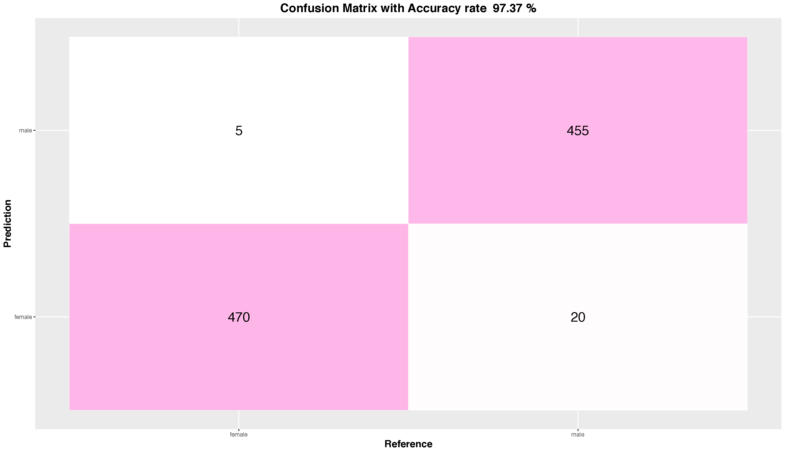
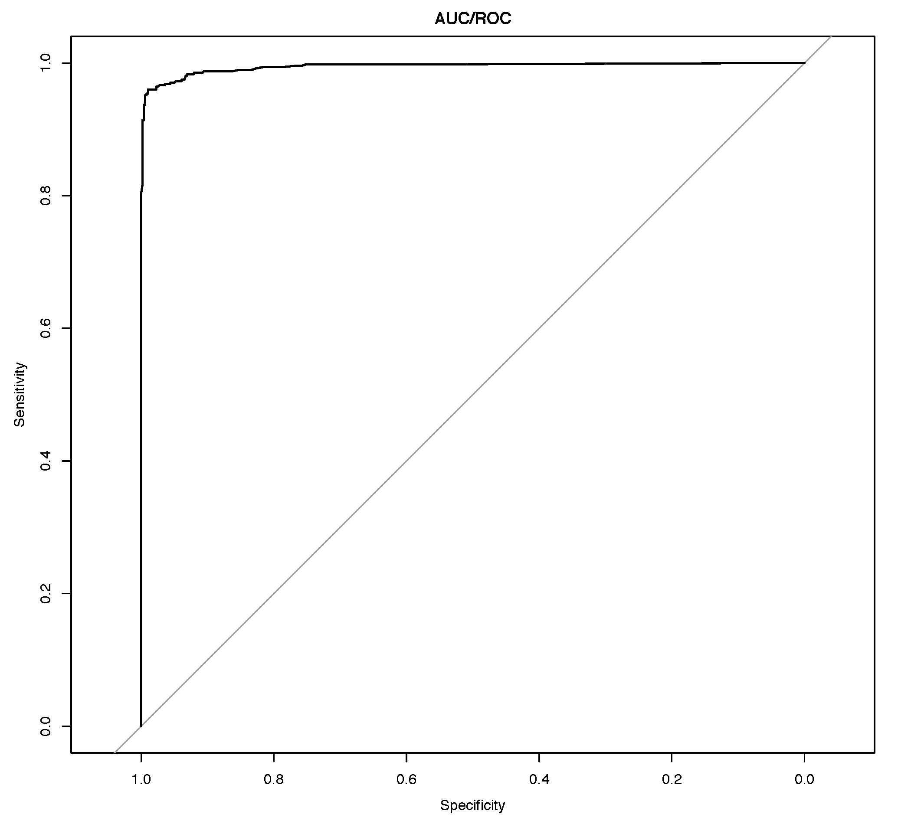
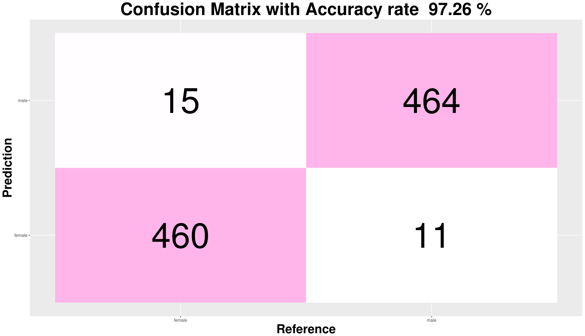
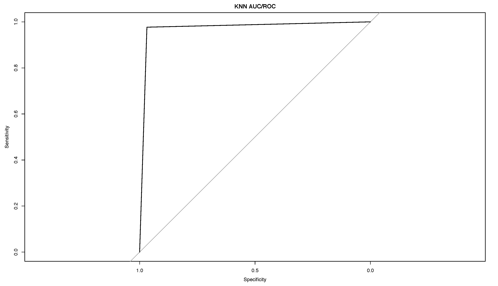
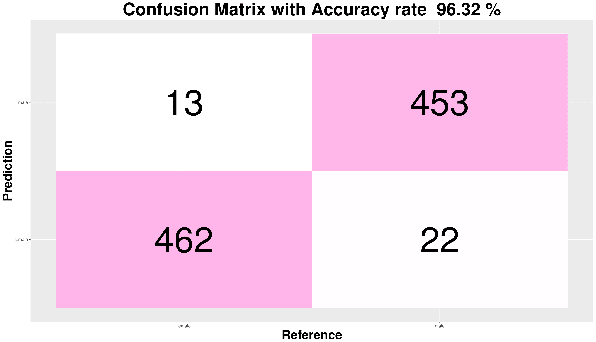
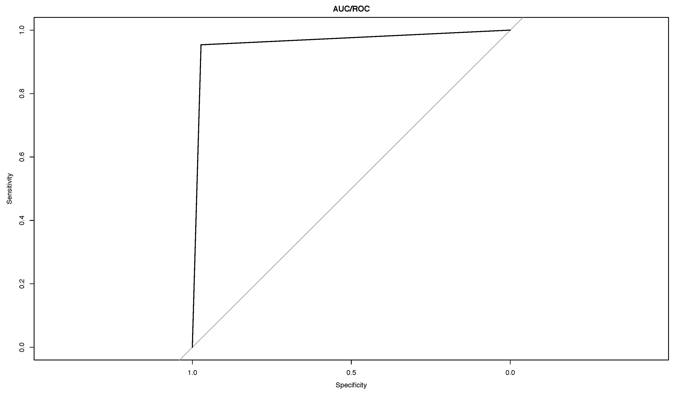

Three classification models were considered for gender recognition:
1. Random Forest
- Set parameters for random forest model
- Plot the ROC/AUC and confusion matrix
Confusion Matrix
AUC/ROC Curve
Based on the confusion matrix, there are 468 samples are predicted correctly as females; however, there are 10 samples predicted as males but are actually females. There are 465 samples that are predicted correctly as males; however, there are 8 samples that are predicted as female but are in fact male. Based on the elbow method, we find that the first segment of line in AUC is almost parallel to the y-axis and the angel of the left corner is nearly 90 degree, which means that the area under curve is close 100, and also means that this is a good model. The accuracy rate is 98.11% and it is in the 95% confidence interval with the p-value far smaller than 0.05. Therefore, it can be concluded that this accuracy is statistically significant.
2. K-Nearest Neighbour
- Set parameter k = 7. When k=7, compared to other k values, the accuracy reach the highest
- Plot the ROC/AUC and confusion matrix
Confusion Matrix
AUC/ROC Curve
Based on the confusion matrix, there are 461 samples are predicted correctly as females; however, there are 17 samples predicted as males but are actually females. There are 466 samples that are predicted correctly as males; however, there are 7 samples that are predicted as female but are in fact male. The accuracy is 97.48% and is in the 95% confidence interval with the p-value far smaller than 0.05. Therefore, we can say that this accuracy is statistically significant.
3. Logistic Regression
Confusion Matrix
AUC/ROC Curve
Based on the confusion matrix, there are 464 samples that are predicted correctly as females; however, there are 14 samples that are predicted as males but are actually females. There are 464 samples that are predicted correctly as males; however, there are 9 samples are predicted as females but are in fact males. The accuracy is 97.58% and is in the 95% confidence interval with the p-value far smaller than 0.05. Therefore, this accuracy is statistically significant.